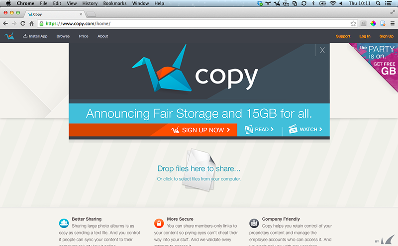

Copy
Store & Share

What is copy?
Copy is an easy way to store, protect and share your files. It keeps your computers in sync and your files available from anywhere, also on your mobile devices. With Copy, you can easily share files with anyone publicly or privately. Copy is similar to other file storage services like Dropbox and Google Drive.
First Steps
- Go to Copy.
- Fill in the sign up form and verify your email address.
Features
- Share files and folders.
- Share publicly or by private invite only.
- Share view-only or let people sync and edit.
- Email attachments have size limitations. Copy doesn’t.
How to share
- Locate the file or folder you would like to share on Copy.com.
- Right click (ctrl + click on Macs) on the file or folder and select Share.
- The first time you select share on a file/folder you will be able to select between public or private sharing (this can be changed if you would like after your initial choice).
- If you've chosen public, you can choose to share via social network, email or by sending someone the link to your folder directly.
- If you've chosen private, you will be prompted to fill out an email form. The user you're sending the private invite to will have to have a verified Copy account to access the link.
Tips & Links
- Refer people to gain 5GB for each referral.